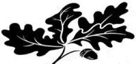

Book One

In the End, the Beginning
Since times long past, Wrackshee slavers stole beasts away into the High One’s slavery. Except for the one they missed. Beyond the Forever End, that five-year-old escapee—saved by her mother’s sacrifice—was rescued by Roundies and found a new home with them. In future centuries, the ancient story of her miraculous escape and early years in the Rounds would be overshadowed by what came after. An accidental meeting at age twelve, leading her back to her original homeland in the Hedgelands and her long-lost father. And at age fifteen, her exile from the Hedgelands, launching her into a leading role in the unraveling of the age-old tyranny of the High Ones...
The Drownlands wharf, shrouded in one of its legendary fogs, swirled with activity in the first pale light of dawn. Fish oil lanterns cast a faint, but serviceable, glow through the fog. Swarms of boats and canoes rocked and swayed on mooring ropes along the docks. Odors of musty canvas and damp wood mingled with pungent smells of fish, crayfish, and frogs being unloaded from fishing boats. Traders haggled with peddlers or bet their luck against cardsharps. Coins rattled in the tin cups of vendors hawking frog-fritters and hot Stinger Cider.
On the landside of the wharf, galley beasts in the station house scurried about making breakfast for dockworkers and wayfarers. The aroma of frying catfish, simmering beans and baking cornbread attracted sweaty dock laborers, whooping and hollering as they collapsed into chairs around tables to take a break. A crude Otter ferry pilot, little used to niceties and finery, lifted his bowl and dribbled the last of his corn mush into his mouth, licking the bowl out with a loud slurping. Wiping his mouth on his coat sleeve, the Otter looked wildly about for a galley beast to bring him more food. Banging his bowl on the table, he roared, “Yawp! Yo, Hollos! Where’s ma fish on’a plank? Where’s ma muff and crusts? Raise me some Tabasco and galley cheer! Ha! The bell will be tollin’ for me afore I’m full, at this rate. Yo, Hollos! Jump it over here!”
The rowdy Otter, howling and hollering to be served, flicked out a sharp skinning knife and sent it flying across the room. THWANNG! The blade buried itself in the timber just above the galley door. “Yawp! Yo, Hollos! That’ll be a kindly request for ma galley cheer! Ho! Ho! Ho!” Galley beasts dashed under the quivering blade, rattling plates and bowls as they scrambled to bring him his breakfast.
But the Drownlands wharf—the frontier gateway between the rough Drownlands wilderness and the tidy settlements of the Rounds—was a place of mixing and transitions of many kinds. Not all were rubes and roughnecks. At a quiet table in the corner of the room, a party of travelers calmly finished breakfast and left to catch the running-wagon that was about to leave the station.
Just outside, Livery Rats scrambled to prepare the Drownlands Weekly for departure. Travelers loaded quickly as burly Dock Squirrels tossed bags and trunks into the rooftop luggage rack. As soon as the baggage was loaded, the Weekly rolled away from the station with creaking timbers and rattling brass, its freshly serviced wheels smelling strongly of snake grease.
Bouncing along the bare track leading away from the Drownlands station, the Weekly rumbled through the sparsely settled frontier of the Rounds. Except for the Weekly and a few cargo wagons, the bone-jarring road was little used. A river of mud when it rained and a dust-choked washboard of ruts in the dry season, the many stones in the Cutoff road gave its only predictable surface.
Three of the passengers in the Weekly on this particular spring day were creatures we will hear much about in this account of former days. There was a strongly muscled young Wood Cow with soft, thick hair and a lively face. Dressed after the manner of her clan—long barkweave jacket and leggings, lizardskin boots, forest green linen shirt—Helga dozed fitfully, her head lolling against the jostling headboard. Although exhausted by her long journey, a smile played across her face. The sound of the rumbling wagon assured her that she was, indeed, coming back to the Rounds after a three year absence.
Helga’s father, called Breister, bounced and swayed beside her. He had strong proportions, but was somewhat short for a Wood Cow, being barely taller than his daughter. His broad-brimmed hat, tilted forward, hid his face somewhat. The bushy beard and long tangled hair flowing over his shoulders somehow seemed to amplify the keen, proud look in his eyes. Peering out from under his hat brim, he watched the countryside passing outside the window.
Leaning against Breister sat a powerfully built female Wood Cow. Fine lines and strong features gave her face a handsome look and ample hair spilled out from under her hat. Her eyes were astonishingly black, like polished obsidian, but with red flecks sparkling within them. A spirit of pugnacious determination seemed to be written everywhere in her manner, even as a kindly smile betrayed the softness of her heart. This was Helbara, Helga’s mother.
As the running-wagon proceeded, little by little Breister noticed more and more creatures gathering, lining the road on both sides. Farmers, laborers, shopkeepers, peddlers and traders, old and young—Roundies of every size and age crowded the roadways, surging around the running-wagon, shouting their welcome to Helga.
“He-ho, Helga! Mampta-He-O! Jurrah!”
On every side, there were cheers and shouts of greeting. Knowing that news of Helga’s exploits had likely preceded them, Breister had expected a warm welcome for Helga, but nothing like this.
“What’s going on?” Helga asked, blinking sleep from her eyes.
“Look!” Helbara pointed. “In the name of the Ancients, see what’s happening.”
The running-wagon gradually came to a stop amidst the immense crowd surging around it, blocking the road. Dismounting, Helga climbed to the top of the luggage rack where she could see her friends more fully. Taking off her wide-brimmed hat, she waved it high over her head in greeting. As her eyes scanned across the welcoming crowd, she caught sight of old friends. Memories of her earlier life in the Rounds flashed through her mind...
There was Mianney Mayoyo; her two pet lizards perched on her shoulder. A tough and wild-eyed River Cat, Mianney lived alone in a shack perched high on poles in the Deep Springs River. Thought to be half-savage, with strange-smelling smokes always drifting from her cabin, some avoided Mianney. But despite her fierce appearance and hermit-like ways, many called her a healer. To Helga she was a savior. Ten years before, Mianney had wakened in the middle of the night to the loud shouts of two Trapper Dogs. They had found five-year-old Helga, sobbing and lost, thrashing through the shallows near Mianney’s shack.
Standing behind Mianney was Picaroo “Pickles” DiArdo—one of the Trapper Dogs that had pulled Helga from the river that night ten years before. It was almost surprising for Helga to see him standing in the crowd. Pickles nearly lived in the long birch bark canoe with the high vaulted prow that he and his partner, Lupes Lupinio, used for travel in the backwoods, checking their snake traps. Helga remembered the smell of the cool, damp canoe bottom where she sat among the musty-sweet bales of snakeskins. She remembered Pickles’ long brown arms, scarred from poisonous snakebites he had survived, paddling the canoe with a gentle rocking of his shoulders. He still wore the loosely tied kerchief around his neck, and was even more a bushy mass of whiskers than Helga had remembered.
“Ra-Zoo, Helga! Huncha to mi round!” The shout was from Neppy Perquat, her old friend from school days. Helga smiled as she recalled staying with Neppy and his family when she first arrived in the Rounds. Such kindness they had shown: the flatcakes for breakfast...the Old Bunge accent in the family’s speech, so unusual in the Rounds...the bright red carpet bag Neppy’s mother gave Helga to carry her things in when she left the Perquat’s to move in with the Abblegurt’s who adopted her.
Even Miss Edna Note, Helga’s old flute teacher, who had never been satisfied with Helga’s playing on the pronghorn flute, was among those welcoming Helga home. Pausing at the edge of the crowd, the graying Badger waited as if uncertain whether Helga would notice her. Helga, however, immediately recognized the figure in the familiar brightly flowered calico dress and matching bonnet. Wrinkled and thin, but still vigorous, Miss Note waved softly at Helga as their eyes met.
Helga smiled as she returned her old teacher’s gaze. Under that gaze, however, Helga’s eyes filled with tears, altering her sight. Through her blurred vision she seemed to see Miss Note playing her flute far away...ten years before...
~ ~ ~
Tangled snags of fallen trees and debris littered the riverbank. Floating along, exhausted, half-submerged, with her five-year-old daughter, Helga, clinging to her back, Helbara stopped to rest a moment. Remaining low in the water, she pulled herself in among the dense reeds and willows surrounding a fallen tree. Except for the soft gurgling of the Deep Springs River—its water colored bronze in the light of the orange moon overhead—the warm night was ominously quiet. Struggling to control the harsh rasping of her ragged breathing, Helbara knew she could not rest long. “Help us, Ancient Ones,” she breathed, as the glint of moonlight caught on more and more points of polished metal rounding the riverbend not more than a hundred yards away. Her mind worked in frantic desperation as she watched what almost seemed to be clouds of ghostly fireflies approaching from up the river.
She hardly had time to think, however, before Helga’s grip on her neck tightened. Their pursuers were drawing near. “Snake-bloods, Mama! Now what?” her daughter whispered urgently.
“Shee’wheet, Helga, Shee’wheet,” Helbara hissed. “Yes, I see them. The Wrackshees will soon be here. Be still. Ever so quiet.”
Six heavily-armed Wrackshees, kneeling in individual kayaks made of tightly-woven reeds, paddled silently toward them. The once-faint outlines of the Wrackshee slave hunters steadily grew more distinct as they approached. Their beeline course on the wide river seemed to be zeroing in on Helbara’s hiding place. She realized she could not risk further movement above water—the Wrackshees were now too close.
Shaking the reeds as little as possible, she pulled herself and Helga further back among the reeds until only small cracks were left to peer through. Sensing Helga’s rising terror, Helbara softly whispered an old lullaby, trying to calm her: “Shee’wheet, Sweet-Leaf, Shee’wheet...Shee’wheet, Sweet-Leaf...”
Her own heart banging in her chest, Helbara watched the Wrackshee kayaks approaching relentlessly. Moonlight clearly revealed the albino Wolf in the lead kayak—small in stature, abnormally flattened face, thick-necked, with a large moustache. She shuddered. Six kayaks. One Wolf and five Weasels. Somewhere behind them, many more. If she and Helga were discovered, what resistance could they offer?
Suddenly the kayaks slowed, pausing about twenty yards away—close enough that the Wrackshees’ awful stench covered the area with a suffocating blanket. Using only hand signals to communicate, the slavers silently peered here and there for any sign of their prey.
The razor-sharp tips of dozens of small throwing lances, carried on bandoliers slung over the Wrackshees’ shoulders, shone red in the moonlight. Helbara knew that terrible things happened to beasts hit by those poisoned tips—going mad with thirst, eyes bugging, bleeding the color of grass. Each time the gaze of a Wrackshee seemed to fix on the spot where they were concealed, Helbara trembled on the edge of panicked flight. To do so, however, would mean certain capture or death. They were trapped. With every ounce of inner strength, Helbara held her panic in check.
“Shee’wheet, Helga, Shee’wheet...We must be very still. Do not say anything unless I ask you to.” As she uttered these words, she attempted to shift Helga’s weight on her back and slipped on the loose sand. Her boot seemed to suddenly drop into a hole. Catching herself before she made a complete fall, she feared the Weasels might have observed her misstep. For the moment, however, their pursuers seemed to be absorbed in their sign language consultation.
Moving her boot gently, Helbara explored the apparent hole where she had stumbled. The opening was large—the submerged end of a long-decaying fallen tree. In the moonlight, Helbara’s eyes struggled to see evidence of the rest of the tree. The dense reeds and willows made it difficult to be certain, but the position of the hollow end she had discovered seemed connected to a massive upended root clump visible further down the bank. How much of the tree was hollow?
“Sweet-Leaf,” Helbara whispered very softly, “I need you to explore something for me. Slide quietly off my back, take a deep breath, and duck underwater—see if you can tell if this tree beside us is hollow.” The request immediately dampened Helga’s fear. Action was an antidote to terror. As quietly as the reeds waved in the soft evening breeze, she disappeared below the surface.
In a few moments she was back. “Not hollow very far,” she whispered, “but there’s a big opening at first. Then the hollow part ends, but there’s a hole in the bark at the end that’s above water. It’s small but a beast could breathe there.” Pausing and looking deeply into her mother’s eyes, she concluded with a tone of sorrow, “But only room for a small beast.”
As she listened to her daughter’s report, a plan rapidly formed in Helbara’s mind. It was none too soon. The albino Wrackshee made a quick sign with his paw. The gesture was at the same time purposeful and sinister. The Weasels were no longer waiting. Two of the kayaks turned and glided directly toward the Wood Cows’ hiding place. Pressing her daughter close to her chest in a comforting embrace, Helbara calmly gave Helga instructions.
“The hollow space in the tree is large enough,” she said, “to conceal you well for some time. The Wrackshees will not likely think to look there for you. They may not even know you escaped with me. I want you to quietly—just as quietly as you did before—duck under again and hide in the hollow space in the tree. Be absolutely quiet no matter what happens.”
Helga immediately understood she was being asked to play a serious game of hide-n-seek with their pursuers. Long moments seemed to drag by. There had been no mention of what her mother planned to do.
Then Helbara urged Helga underwater and whispered, “Sweet-Leaf, Mamma’s going to talk to those Snake-bloods to make certain they don’t harm you. You wait in that hollow place and stay as quiet as you can.” She gave Helga a squeeze and handed her a pronghorn flute she had played for her back in their home. “Take this, Sweet-Leaf, it’s my promise that I’ll be back.” Helga’s eyes met her mother’s in a deeply moving, but silent, farewell as she slipped the flute in her pocket.
How long Helga remained hidden, she didn’t know. When anxiety and loneliness became too much to bear, she cautiously emerged from the hollow tree. Finding the river silent and empty, she struggled to keep her terror in check. Her eyes filled with tears, and for several moments, she she stood silently, her lips trembling. Then she wiped her eyes, pushed her fear aside, and began sloshing miserably through the river shallows. Where she was going, she did not know. She only knew that she must move on.
Then, the silhouette of a large canoe filled her misted vision, looming before the same young Helga, who was now sloshing miserably through the river shallows during the deepest dark of the night.
A beast crouched low in the canoe grabbed her with long, brawny arms. Captured in the strong grasp of this unknown powerful stranger, Helga’s sense of panic surged. In a desperate effort to escape, she was almost ready to bite the beast that held her, when the whisper of a gruff voice stopped her struggles.
“Hey-hey, ya lee’tle Bungeet! Stop da chop sputter, or those Wracker’mugs will b’a back at ya ’gin frighter t’en ever. Shee’wheet...”
The softly whispered “Shee’wheet” calmed Helga. The gentle, soothing tones, so like her mother, marked this rough stranger with a kindly manner that made her feel safe. Settling the small Wood Cow in the bottom of the canoe, her rescuer—Pickles DiArdo as she later learned—continued his soft soothing lullaby and patted her gently on the back in assurance of safety, as his partner began paddling again.
“This’n Bungeet’s had some stinkin’ Wracker’mugs b’itin at her,” Pickles said to the other Trapper Dog paddling in the prow. “Go for Mianney’s, Lupes—the Healer will s’nd her pain t’way.”
The canoe traveled about another two hundred yards and turned into a small, nearly invisible side channel flowing into the main river course from among the willows. Paddling with gentle determination against the current, the canoe glided toward a rough shack perched high above the water on stout poles. Giving one final hard push with their paddles, the Trapper Dogs bent low as the canoe glided under a dense thicket of wild thorn trees growing around the shack. The thorns, tough as steel and with points so sharp and fine they made marvelous sewing needles, ringed the cabin like sentries. No one would attempt to approach the shack through such ferocious thorns except those invited to come and shown the way to pass.
The thorns did not deter Pickles and Lupes, who often visited Mianney Mayoyo. Tying their canoe to one of the thorn trees, Lupes unrolled a bark mat and threw it up over the lowest branch of the tree. Using the mat for safe passage over the outermost thorns, the three travelers reached the interior of the tree where they were able to drop to the ground. Branches on the rear of this particular tree had been trimmed away to allow exit to the shack.
They had hardly reached Mianney’s shack and called out to her when she was instantly with them. The old River Cat, who was rumored to be ancient—some said she had always lived—had long, jet black hair that was smooth and shining from the walnut oil she rubbed into it each day. Dangling far down in front of her was an ornate necklace of beads, and on each wrist she had broad woven bracelets, decorated with copper sunbursts.
Mianney carried a small basket. Without any word of greeting to her visitors, she pulled a bundle of dried herbs and two green-colored balls of thorn tree pitch from the basket. Arranging the herbs and pitch balls in a ceremonious pile before them, with seeming magic she produced a glowing coal from her jacket pocket and lit the pile. A sudden burst of flame, and the herbs and pitch balls sent up a sharp pillar of fire.
As the small fire flamed, Mianney’s deep brown eyes darted here and there gleefully. Her bubbling wild intensity frightened some superstitious people, who said she was a demon in disguise. Mianney did seem to do things that were supernatural. The flames that burned so furiously for a few moments, suddenly died down, leaving a dense pungent cloud of smoke. Still without speaking, with lightning quickness Mianney lifted Helga to her arms and ascended the ladder to her shack. In the blink of an eye she and Helga were gone. A wisp of pungent smoke, swirling where Mianney had stood, was all that assured Pickles and Lupes that she had actually been with them a moment before...
As Mianney held Helga close through that long-ago night, flute music, rising and falling from a more distant cabin—belonging to Edna Note—was a safe and soothing sound in the dark.
That flute music—so comforting, such a balm on her terror—was, for Helga, a symbol of her deliverance. The peaceful imprint of the flute melody wafting to her during the darkest part of the night struck Helga in the heart as powerfully as the shafts of yellow sunlight that illumined Mianney Mayoyo’s shack the next morning. It was as if her mother’s promise to return soon had been fulfilled.
~ ~ ~
Now, as the memories from ten years before faded, the sight of Miss Note, graying and bent, sent shivers down Helga’s spine. A powerful instinct of the heart urged Helga to quickly push through the crowd, hurrying to see Miss Note. The stooped old Badger, her face still hearty and strong, greeted Helga gleefully.
“Helga, Helga, Helga...Look at you,” Edna smiled, her eyes tearing with joy, clasping Helga in a tight embrace. “Even my eyes that are not what they used to be can see that you are changed. You are no longer the wild rapscallion that aged me beyond my years.” The elderly music teacher laughed, continuing to hold Helga by the shoulders, gazing intently at her as if seeing something in Helga that eyes were not needed to see.
“Miss Note, I’m truly sorry...”Helga began. “I never meant...”
“...Never meant to put mice in my longhornphone...or to smear my flute with snake grease...or to call me ‘Old Lady Sqawkbeak’?” Edna smiled. “You know, of course, that now I laugh about all those old torments..I’m so happy you’ve returned while I can still greet you.” Travelers have brought us news of you. Everyone is so excited. Sareth and Elbin are waiting for you over by the Perquat’s wagon, and there are lots of other folk over at the Commons. I couldn’t wait to see you, so Neppy helped me get through the crowd. We’ve heard some amazing stories...can it all be true? There must be time for you to tell us everything.”
Helga stepped back and looked at Miss Note fondly. “It seems strange, as I think about it, Miss Note,” she began. “I’ve seen unbelievable things and been terrified for my life. I can hardly believe what has happened to me. But, as strange as it seems, my greatest adventures were within myself.”
Helga paused, looking embarrassed. “I was going through some confusing times when I used to torment you. Somehow, although everyone was kind, I didn’t seem to fit in anywhere. I felt so strange. That’s why I left the Rounds. When I met the Lynx who knew my father, I just had to go.”
“You’ve changed since I last saw you, Helga,” Edna observed.
Helga paused, looking off into the distance as if again seeing something there. “My story is not my own, Miss Note,” she said. “In my mind I see so many friends who are not here and able to tell the part they had in my adventures. My story is actually many stories. As I tell it, it may sound like one story, but it is really many stories that cross each other. Creatures that I will never know have had a hand in my story and I in theirs. So, you’ll have to forgive me as I tell my story...I don’t know it all myself.”
The elderly Badger smiled. She bent down and picked up a tuft of grass and some dirt. Giving some to Helga, she put some in her own pocket also. The rest she tossed up in the wind. “That’s the way our stories are, Helga—many people have a piece of it, and the story carries on in directions we never know.”